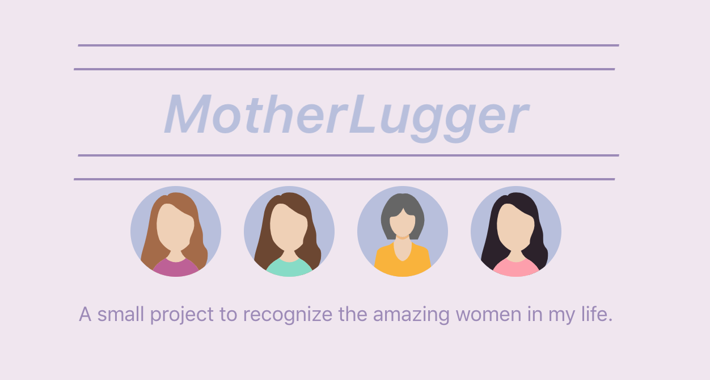

Engineer by day... engineer by night. I make (and sometimes break) things at Bitly.
I am always pushing myself to learn more and create better things. The best part about my job is that I get to learn every day.
Currently, I specialize in back-end development writing REST APIs in Go built on top of relational databases and integrating with some 3rd Pary APIs.
Some of the languages, tools, and frameworks that I am most comfortable with at the moment:
In my free time I like to tinker with hardware projects. Sometimes I'll design and build websites to step outside of my comfort zone. Some of my projects have been featured on tech sites and blogs. These are a few of my favorites
Over the summer of my first internship, I integrated facial recognition into a distributed IoT platform. This led to a couple of applications including an interface-free coffee counter and a self-targeting dart gun!
To keep my desk plant from dying I automated its watering using a Raspberry Pi, hobby pump, and a soil moisture sensor. This project was featured on the front page of hackster.io. I plan to redo this project using TinyGo on an Arduino.
A mothers day scroll story I designed and built as a mothers day gift. This was built from scratch using React, Sass, and Parallax. It is by no means perfect but I'm like 82% sure it made my mom cry so ¯\_(ツ)_/¯
